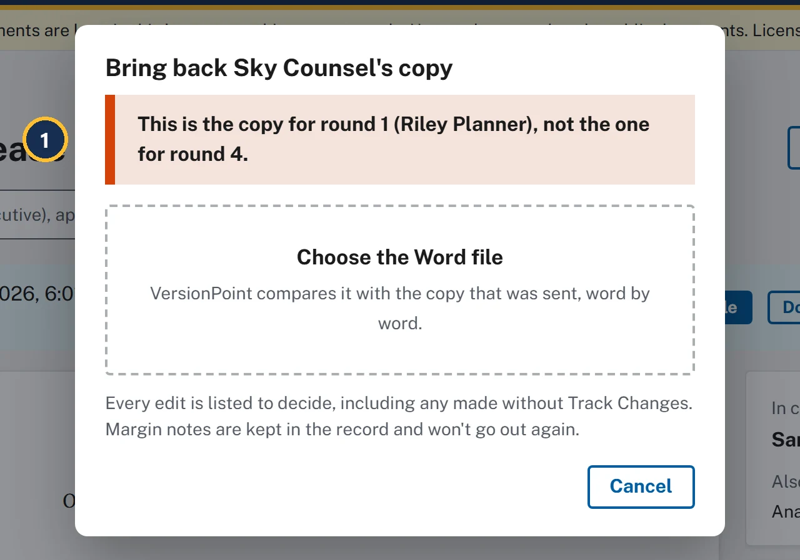
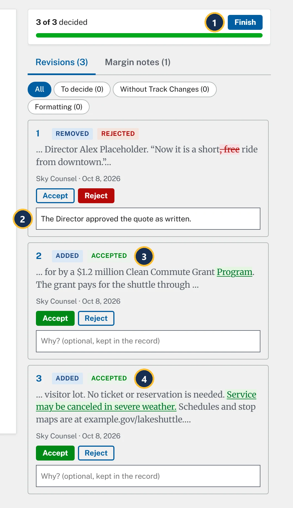
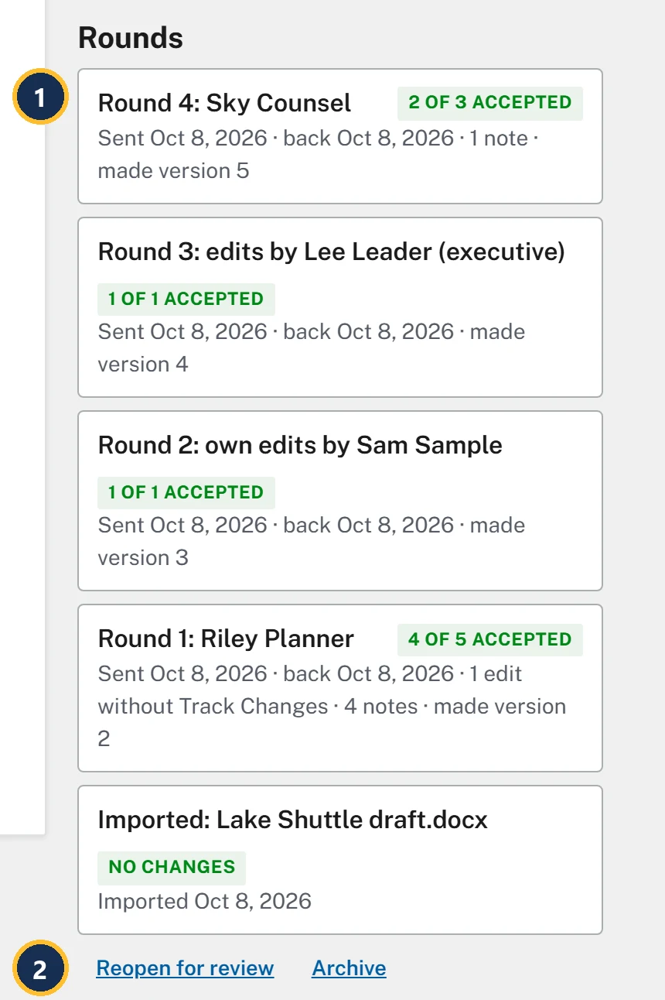
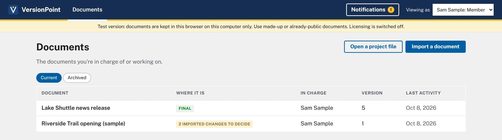

Final project25 minutesThe Lake Shuttle, version 4
A full round on the practice release
Send the release to Sky Counsel in the Office of General Counsel, bring it back, decide every revision, and finish the release, on your own.
Why it matters
This is the job from end to end: one review copy to one named reviewer, every edit decided with a reason, notes kept out of the copy that goes out, and a record that answers for every line. Work through the checklist with the test version beside you, and look back at a lesson whenever you need to.
Watch

- This is the copy for round 1 (Riley Planner), not the one for round 4. The copy mark tells VersionPoint whose copy it is. Choose the right file in the same form.
![The round page for Round 4: Sky Counsel, 0 of 3 decided, with no warnings. Callout 1 marks the heading Round 4: Sky Counsel. Callout 2 marks Asked to check: "Legal review before release." Callout 3 marks the quote paragraph, where ", free" is struck through as removed, numbered 1. Program is underlined as added after Clean Commute Grant, numbered 2, and Service may be canceled in severe weather. is underlined as added, numbered 3. Callout 4 marks the tabs Revisions (3) and Margin notes (1). Callout 5 marks card 1, Removed, with Accept, Reject and the Why? box. Cards 2 and 3, both Added, are below it.](assets/f-round4-a.webp)
- Round 4: Sky Counsel.
- Your note to Sky, Asked to check:, so you can see what they were asked.
- Revision 1: , free struck through as removed from the Director's quote. Revisions 2 and 3 are underlined as added.
- Revisions (3) and Margin notes (1): Sky's note on the weather line.
- Card 1, waiting for your decision.

- Finish is ready at 3 of 3 decided.
- Your reason on card 1. It's saved when you leave the box.
- Card 2, Accepted.
- Card 3, Accepted.

- Riley's grant note from round 1, still on Clean Commute Grant, with both replies. Sky's Program settled it.
- Sky's note, on No ticket or reservation is needed.
![Round 4 in the record. Callout 1 marks the heading Round 4: Sky Counsel; the line under it says it was sent by Sam Sample from version 4, came back, and was finished by Sam Sample, making version 5, and that Sky was asked to check: Legal review before release. Callout 2 marks Rejected, Sam Sample on revision 1, Removed: , free. Callout 3 marks the reason: The Director approved the quote as written. Revisions 2 and 3 are Accepted, Sam Sample. Under Margin notes, Sky Counsel's note on "No ticket or reservation is needed."](assets/f-record-a.webp)
- Round 4: Sky Counsel, from version 4 to version 5.
- Rejected, Sam Sample.
- Your reason, under Why. If the Director's office ever asks why legal's edit didn't go in, this is the answer.

- Round 4: Sky Counsel, 2 of 3 accepted.
- Reopen for review brings it back if the release has to change. Archive moves it to Archived on Documents.
Try it
Start on the document page of Lake Shuttle news release, version 4, as Sam Sample, where lesson 9 left you. Sky Counsel's returned file comes from the reviewer's desk. Here's what Sky does, and what you'll decide:
| # | Sky Counsel's edit | Your decision |
|---|---|---|
| 1 | Removes , free from the Director's quote: Now it is a short, free ride from downtown. | Reject. Why: The Director approved the quote as written. |
| 2 | Adds Program after Clean Commute Grant | Accept. It's the full name Drew Grants gave in round 1. |
| 3 | Adds Service may be canceled in severe weather. after No ticket or reservation is needed. | Accept |
Sky also leaves a note on No ticket or reservation is needed.: Add the weather line so riders are not promised service in a storm.
- The reviewer's desk: plays the reviewer on a copy you downloaded.
Send it out
- Choose Send for review. In Who is it for? type Sky Counsel, and in What should they check? type Legal review before release. Choose Make the copy, then Done. Lake Shuttle news release - for Sky Counsel - round 4.docx downloads, and the banner says Out with Sky Counsel.
- On the reviewer's desk, choose Sky's copy, then choose Download the returned file.
Bring it back
- Choose Bring back the returned file. On purpose, choose Riley Planner's returned file from lesson 4, Lake Shuttle news release - for Riley Planner - round 1.docx. The form says This is the copy for round 1 (Riley Planner), not the one for round 4. Nothing is brought in.
- In the same form, choose Sky's returned file. Round 4: Sky Counsel opens with three revisions, Margin notes (1) and no warnings.
Decide
- On card 1 (, free removed), choose Reject. In Why? (optional, kept in the record) type The Director approved the quote as written. and press Tab to leave the box.
- Choose Accept on card 2 and on card 3. The page says 3 of 3 decided.
- Choose Finish. The version list says Version 5 (latest): After review by Sky Counsel, and Rounds shows Round 4: Sky Counsel, 2 of 3 accepted.
Check and finish
- Look at the notes. Riley's note still quotes Clean Commute Grant, and Sky's quotes No ticket or reservation is needed. Neither says the words moved or changed.
- Choose Clean copy. It passes with nothing worth a look. Choose Download the clean copy, then Close.
- Choose Record and find round 4: revision 1 is Rejected, Sam Sample, with your reason under Why. Choose ← Lake Shuttle news release.
- Under Rounds, choose Mark this document final. The Final tag appears, Send for review and Edit it yourself go, and Reopen for review and Archive appear.
- Choose ← Documents. The release is tagged Final, version 5.
Check your work
![The finished release, version 5, marked Final. At the top: the Final tag beside Version 5 (latest): After review by Sky Counsel, and only Clean copy, Record and Project file are offered. The release reads: Buses run every 20 minutes on Saturdays and Sundays from May 3 through September 27. The shuttle uses four buses, each carrying up to 40 riders. Every bus has a wheelchair lift and room for two bicycles. "Riverton families told us the lake was close but hard to reach," said Director Alex Placeholder. "Now it is a short, free ride from downtown." The service is paid for by a $1.2 million Clean Commute Grant Program. The grant pays for the shuttle through 2028. No ticket or reservation is needed. Service may be canceled in severe weather.](assets/f-final.webp)

Watch out for
Well done
You took The Lake Shuttle from a draft to a finished release: five versions, four rounds, three reviewers, an executive's edit and your own fix. Every change was decided, every reason was kept, and no note went out in a copy.
The proof is the record. Choose Record on the release: every version, who made each one and when, every revision with its decision and reason, and every note, ready to print or save as PDF. When someone asks why a line reads the way it does, that's your answer.
When you're ready, try the same steps on a made-up document of your own, or one that's already public. Keep real drafts out of the test version.